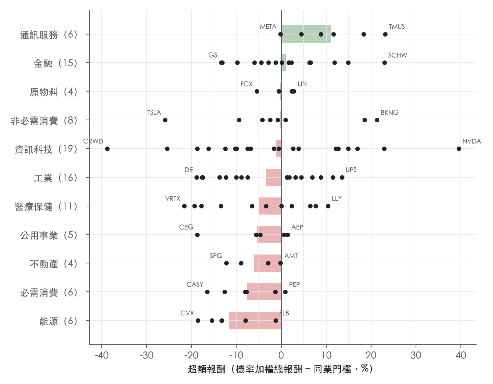

100 檔：買進 8、加碼 16、中立 34、減碼 27、賣出 15；平均超額 -2.2%；集體押注 1 個類股
本版 2026-11-02。前幾版：2026-10-14（看 Word 檔）
| 涵蓋 | 100 檔 |
| 評等分布 | 買進 8、加碼 16、中立 34、減碼 27、賣出 15 |
| 平均超額 | -2.2% |
| 集體押注 | 能源看空 |
| 總經前提 | 2026-11-01：通膨黏3%、再升兩碼不降，成長放慢不衰退 |
100 檔：買進 8、加碼 16、中立 34、減碼 27、賣出 15；平均超額 -2.2%；集體押注 1 個類股
超額為負的股票占 58%；中位數 -1.5%。
買進＋加碼平均超額 +14.5%，減碼＋賣出平均 -13.7%。
51 檔落在評等邊界（距離鄰近評等 3 點以內），評等可能因雜訊翻轉。

| 類股 | 檔數 | 買進／加碼／中立／減碼／賣出 | 平均超額 | 平均預期總報酬 | 最看多 | 最看空 | 讀哪個總經變數 | 前提隱含的總經影響 | 集體押注 |
|---|---|---|---|---|---|---|---|---|---|
| 通訊服務 | 6 | 2／2／2／0／0 | +11.0% | +20.4% | TMUS | META | 10 年期公債 % | — | — |
| 金融 | 15 | 1／4／6／4／0 | +1.0% | +11.1% | SCHW | GS | 2 年期公債 %、信用利差 Baa−10 年 pp | -1.5%（10 檔） | — |
| 原物料 | 4 | 0／0／3／1／0 | -0.2% | +8.5% | LIN | FCX | 銅 美元／公噸、美元廣義指數 | +0.0%（2 檔） | — |
| 非必需消費 | 8 | 2／0／4／1／1 | -0.3% | +9.5% | BKNG | TSLA | 實質 GDP（未來 4 季累計 %）、核心 PCE（未來 4 季累計 %） | — | — |
| 資訊科技 | 19 | 3／3／4／5／4 | -1.2% | +8.2% | NVDA | CRWD | 10 年期公債 % | — | — |
| 工業 | 16 | 0／4／4／5／3 | -3.5% | +6.3% | UPS | DE | 實質 GDP（未來 4 季累計 %） | -1.7%（5 檔） | — |
| 醫療保健 | 11 | 0／3／3／2／3 | -5.0% | +4.9% | LLY | VRTX | — | +0.0%（3 檔） | — |
| 公用事業 | 5 | 0／0／3／1／1 | -5.4% | +4.2% | AEP | CEG | 10 年期公債 % | +0.0%（3 檔） | — |
| 不動產 | 4 | 0／0／2／2／0 | -6.1% | +4.0% | AMT | SPG | 10 年期公債 %、信用利差 Baa−10 年 pp | -0.6%（4 檔） | — |
| 必需消費 | 6 | 0／0／2／3／1 | -7.6% | +1.4% | PEP | CASY | 核心 PCE（未來 4 季累計 %） | — | — |
| 能源 | 6 | 0／0／1／3／2 | -11.6% | -1.5% | SLB | CVX | WTI 美元／桶 | -2.6%（4 檔） | 看空 |
前提隱含的總經影響＝個股對該總經變數的股價敏感度（扣掉大盤，|t| ≥ 2 才算）×（本行前提第 4 季 − 近季）；和平均超額同號＝我們的看法有總經支撐，反號＝看法靠個股理由逆著總經。總經變數對照 本行總經前提 2026-11-01（通膨黏3%、再升兩碼不降，成長放慢不衰退）。
| 股票 | 類股 | 評等 | 超額 | 預期總報酬 | 現價 | 加權目標價 | 報告日 | 邊界 |
|---|---|---|---|---|---|---|---|---|
| NVDA | 資訊科技 | 買進 | +39.5% | +49.2% | 229.28 | 342 | 2026-10-09 | |
| TMUS | 通訊服務 | 買進 | +23.2% | +33.1% | 156.44 | 203 | 2026-10-30 | |
| SCHW | 金融 | 買進 | +23.0% | +33.0% | 88.05 | 116 | 2026-10-30 | |
| AVGO | 資訊科技 | 買進 | +22.9% | +32.6% | 349.57 | 461 | 2026-09-28 | |
| BKNG | 非必需消費 | 買進 | +21.3% | +31.5% | 160.34 | 190 | 2026-10-09 | |
| AMZN | 非必需消費 | 買進 | +18.5% | +28.2% | 251.52 | 322 | 2026-10-02 | |
| DIS | 通訊服務 | 買進 | +18.3% | +26.3% | 108.05 | 135 | 2026-10-09 | |
| ORCL | 資訊科技 | 買進 | +17.0% | +27.2% | 142.30 | 179 | 2026-10-02 | 距加碼 2.0 點 |
| MU | 資訊科技 | 加碼 | +14.9% | +20.4% | 931.24 | 1,121 | 2026-10-15 | 距買進 0.1 點 |
| SPGI | 金融 | 加碼 | +14.9% | +24.9% | 466.55 | 558 | 2026-10-30 | 距買進 0.1 點 |
| UPS | 工業 | 加碼 | +13.5% | +21.5% | 94.57 | 108 | 2026-10-09 | 距買進 1.5 點 |
| DT | 資訊科技 | 加碼 | +12.7% | +22.7% | 57.69 | 71 | 2026-10-30 | 距買進 2.3 點 |
| CRM | 資訊科技 | 加碼 | +12.2% | +22.4% | 229.13 | 279 | 2026-10-09 | 距買進 2.8 點 |
| MA | 金融 | 加碼 | +11.8% | +22.1% | 552.26 | 671 | 2026-10-02 | |
| T | 通訊服務 | 加碼 | +11.6% | +21.8% | 24.90 | 29 | 2026-09-28 | |
| VRT | 工業 | 加碼 | +11.4% | +21.4% | 232.50 | 282 | 2026-10-30 | |
| LLY | 醫療保健 | 加碼 | +10.4% | +20.6% | 1,184.78 | 1,422 | 2026-09-28 | |
| FIX | 工業 | 加碼 | +8.8% | +18.8% | 1,232.66 | 1,462 | 2026-10-30 | |
| NFLX | 通訊服務 | 加碼 | +8.8% | +16.8% | 65.04 | 76 | 2026-10-21 | |
| ISRG | 醫療保健 | 加碼 | +7.7% | +17.2% | 432.01 | 506 | 2026-10-30 | 距中立 2.7 點 |
| EME | 工業 | 加碼 | +6.9% | +16.9% | 679.55 | 793 | 2026-10-30 | 距中立 1.9 點 |
| BLK | 金融 | 加碼 | +6.5% | +16.7% | 1,082.39 | 1,241 | 2026-10-09 | 距中立 1.5 點 |
| UNH | 醫療保健 | 加碼 | +6.5% | +16.7% | 371.90 | 425 | 2026-10-02 | 距中立 1.5 點 |
| LPLA | 金融 | 加碼 | +6.3% | +16.3% | 283.74 | 329 | 2026-10-30 | 距中立 1.3 點 |
| GOOGL | 通訊服務 | 中立 | +4.4% | +14.5% | 283.82 | 324 | 2026-10-29 | 距加碼 0.6 點 |
| NVT | 工業 | 中立 | +4.4% | +14.4% | 125.98 | 143 | 2026-10-30 | 距加碼 0.6 點 |
| NOW | 資訊科技 | 中立 | +3.8% | +13.8% | 105.12 | 120 | 2026-10-30 | 距加碼 1.2 點 |
| RTX | 工業 | 中立 | +3.2% | +12.9% | 193.34 | 216 | 2026-10-20 | 距加碼 1.8 點 |
| LIN | 原物料 | 中立 | +2.8% | +11.4% | 479.48 | 528 | 2026-10-02 | 距加碼 2.2 點 |
| KLAC | 資訊科技 | 中立 | +2.6% | +12.6% | 157.91 | 171 | 2026-10-30 | 距加碼 2.4 點 |
| ABT | 醫療保健 | 中立 | +2.3% | +12.5% | 99.60 | 110 | 2026-10-09 | 距加碼 2.7 點 |
| NEM | 原物料 | 中立 | +2.3% | +10.3% | 117.84 | 129 | 2026-10-09 | 距加碼 2.7 點 |
| AXP | 金融 | 中立 | +2.2% | +12.2% | 319.11 | 354 | 2026-10-30 | 距加碼 2.8 點 |
| GD | 工業 | 中立 | +1.8% | +10.5% | 372.59 | 406 | 2026-10-30 | |
| V | 金融 | 中立 | +1.6% | +11.9% | 385.45 | 429 | 2026-10-09 | |
| AEP | 公用事業 | 中立 | +1.4% | +10.0% | 129.34 | 138 | 2026-10-29 | |
| PWR | 工業 | 中立 | +1.2% | +11.2% | 620.73 | 690 | 2026-10-30 | |
| NKE | 非必需消費 | 中立 | +1.0% | +9.0% | 34.71 | 36 | 2026-10-09 | |
| PEP | 必需消費 | 中立 | +0.9% | +11.1% | 125.97 | 134 | 2026-10-09 | |
| DUK | 公用事業 | 中立 | +0.5% | +10.8% | 114.13 | 122 | 2026-10-02 | |
| PGR | 金融 | 中立 | +0.1% | +10.3% | 217.43 | 226 | 2026-10-09 | |
| ABBV | 醫療保健 | 中立 | +0.0% | +10.3% | 276.47 | 298 | 2026-10-09 | |
| AMT | 不動產 | 中立 | -0.2% | +9.8% | 162.20 | 171 | 2026-10-02 | |
| META | 通訊服務 | 中立 | -0.2% | +10.0% | 718.67 | 789 | 2026-10-09 | |
| SHW | 原物料 | 中立 | -0.6% | +7.4% | 332.61 | 354 | 2026-10-30 | |
| MSFT | 資訊科技 | 中立 | -0.6% | +9.4% | 521.91 | 567 | 2026-10-30 | |
| MCD | 非必需消費 | 中立 | -0.8% | +9.4% | 235.23 | 250 | 2026-10-09 | |
| BAC | 金融 | 中立 | -1.2% | +8.7% | 50.01 | 53 | 2026-10-30 | |
| SLB | 能源 | 中立 | -1.3% | +8.7% | 53.74 | 57 | 2026-10-30 | |
| PG | 必需消費 | 中立 | -1.4% | +3.8% | 165.59 | 168 | 2026-10-22 | |
| ANET | 資訊科技 | 中立 | -1.6% | +6.5% | 168.86 | 180 | 2026-10-30 | |
| TJX | 非必需消費 | 中立 | -2.5% | +7.5% | 140.31 | 149 | 2026-10-30 | 距減碼 2.5 點 |
| CME | 金融 | 中立 | -2.8% | +7.1% | 303.14 | 313 | 2026-10-30 | 距減碼 2.2 點 |
| EQIX | 不動產 | 中立 | -3.0% | +7.0% | 1,036.67 | 1,090 | 2026-10-29 | 距減碼 2.0 點 |
| MCK | 醫療保健 | 中立 | -3.4% | +6.6% | 994.58 | 1,057 | 2026-10-30 | 距減碼 1.6 點 |
| HD | 非必需消費 | 中立 | -4.2% | +5.8% | 290.74 | 298 | 2026-10-09 | 距減碼 0.8 點 |
| JPM | 金融 | 中立 | -4.5% | +5.8% | 332.38 | 346 | 2026-10-02 | 距減碼 0.5 點 |
| SO | 公用事業 | 中立 | -4.7% | +4.5% | 86.17 | 87 | 2026-10-09 | 距減碼 0.3 點 |
| FCX | 原物料 | 減碼 | -5.5% | +4.7% | 72.04 | 75 | 2026-10-02 | 距中立 0.5 點 |
| NEE | 公用事業 | 減碼 | -5.6% | +4.6% | 76.83 | 78 | 2026-10-02 | 距中立 0.6 點 |
| WFC | 金融 | 減碼 | -6.0% | +4.0% | 83.40 | 85 | 2026-10-30 | 距中立 1.0 點 |
| BSX | 醫療保健 | 減碼 | -6.5% | +3.1% | 41.98 | 43 | 2026-10-30 | 距中立 1.5 點 |
| LRCX | 資訊科技 | 減碼 | -6.8% | +3.2% | 239.11 | 246 | 2026-10-30 | 距中立 1.8 點 |
| MRVL | 資訊科技 | 減碼 | -7.5% | +0.5% | 196.40 | 197 | 2026-10-30 | 距中立 2.5 點 |
| ETN | 工業 | 減碼 | -7.5% | +2.4% | 369.97 | 375 | 2026-10-30 | 距中立 2.5 點 |
| WMT | 必需消費 | 減碼 | -7.8% | +1.9% | 111.35 | 113 | 2026-10-09 | 距中立 2.8 點 |
| COP | 能源 | 減碼 | -8.0% | +2.2% | 134.10 | 134 | 2026-10-09 | |
| COST | 必需消費 | 減碼 | -8.0% | +0.7% | 978.01 | 979 | 2026-10-15 | |
| CW | 工業 | 減碼 | -8.9% | +1.1% | 476.01 | 480 | 2026-10-30 | |
| PLD | 不動產 | 減碼 | -9.0% | +1.0% | 127.98 | 125 | 2026-10-30 | |
| ORLY | 非必需消費 | 減碼 | -9.4% | +0.5% | 88.12 | 89 | 2026-10-30 | |
| CB | 金融 | 減碼 | -9.8% | +0.2% | 364.12 | 361 | 2026-10-30 | |
| AMD | 資訊科技 | 減碼 | -9.9% | +0.0% | 608.10 | 608 | 2026-10-09 | |
| HON | 工業 | 減碼 | -10.1% | +0.1% | 218.31 | 214 | 2026-10-22 | |
| KEYS | 資訊科技 | 減碼 | -10.3% | -2.2% | 307.20 | 301 | 2026-10-30 | |
| SPG | 不動產 | 減碼 | -12.2% | -2.0% | 200.95 | 188 | 2026-10-02 | 距賣出 2.8 點 |
| UNP | 工業 | 減碼 | -12.3% | -2.8% | 298.09 | 284 | 2026-10-22 | 距賣出 2.7 點 |
| AMAT | 資訊科技 | 減碼 | -12.5% | -2.5% | 390.09 | 378 | 2026-10-30 | 距賣出 2.5 點 |
| KO | 必需消費 | 減碼 | -12.6% | -2.6% | 94.08 | 89 | 2026-10-30 | 距賣出 2.4 點 |
| IBKR | 金融 | 減碼 | -13.2% | -3.2% | 76.90 | 74 | 2026-10-30 | 距賣出 1.8 點 |
| XOM | 能源 | 減碼 | -13.2% | -3.0% | 172.15 | 163 | 2026-10-12 | 距賣出 1.8 點 |
| WMB | 能源 | 減碼 | -13.3% | -3.3% | 74.35 | 70 | 2026-10-30 | 距賣出 1.7 點 |
| GS | 金融 | 減碼 | -13.4% | -3.2% | 895.32 | 849 | 2026-10-09 | 距賣出 1.6 點 |
| JNJ | 醫療保健 | 減碼 | -13.4% | -3.9% | 257.78 | 242 | 2026-10-21 | 距賣出 1.6 點 |
| GE | 工業 | 減碼 | -13.7% | -3.6% | 299.87 | 287 | 2026-10-20 | 距賣出 1.3 點 |
| TRGP | 能源 | 賣出 | -15.5% | -5.5% | 314.99 | 292 | 2026-10-30 | 距減碼 0.5 點 |
| DDOG | 資訊科技 | 賣出 | -16.2% | -6.2% | 235.27 | 221 | 2026-10-30 | 距減碼 1.2 點 |
| CASY | 必需消費 | 賣出 | -16.5% | -6.5% | 680.19 | 633 | 2026-10-30 | 距減碼 1.5 點 |
| CAT | 工業 | 賣出 | -17.5% | -7.3% | 800.47 | 736 | 2026-10-09 | 距減碼 2.5 點 |
| GEV | 工業 | 賣出 | -17.6% | -7.7% | 857.87 | 790 | 2026-10-30 | 距減碼 2.6 點 |
| TMO | 醫療保健 | 賣出 | -17.8% | -7.9% | 697.00 | 640 | 2026-10-30 | 距減碼 2.8 點 |
| CVX | 能源 | 賣出 | -18.6% | -8.3% | 211.98 | 187 | 2026-10-09 | |
| AAPL | 資訊科技 | 賣出 | -18.7% | -8.5% | 336.64 | 307 | 2026-10-09 | |
| CEG | 公用事業 | 賣出 | -18.7% | -8.7% | 262.38 | 238 | 2026-10-30 | |
| DE | 工業 | 賣出 | -18.9% | -8.6% | 620.93 | 561 | 2026-10-09 | |
| MRK | 醫療保健 | 賣出 | -19.4% | -9.2% | 145.60 | 129 | 2026-10-09 | |
| VRTX | 醫療保健 | 賣出 | -21.6% | -11.6% | 558.88 | 494 | 2026-10-30 | |
| PANW | 資訊科技 | 賣出 | -25.4% | -15.5% | 365.87 | 309 | 2026-10-30 | |
| TSLA | 非必需消費 | 賣出 | -25.9% | -15.7% | 382.70 | 323 | 2026-10-09 | |
| CRWD | 資訊科技 | 賣出 | -38.8% | -29.3% | 250.43 | 177 | 2026-10-30 |
本頁由 equity-desk 程式彙總，供個人研究參考，不構成投資建議。